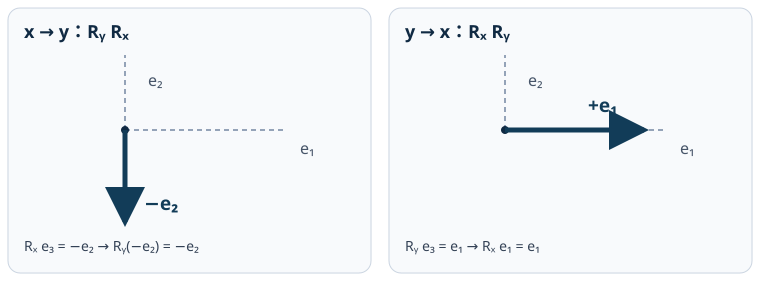

RBD2：90°の有限回転は順序でどう変わる？
物体に固定した三本の基底を描いています。列ベクトルの能動回転で、先に作用する回転を右側に書きます。自動再生はしません。各段は正確な行列積から計算しています。
スクリプトが無効でも、下の静止図で二通りの最終方向を確認できます。

逆の順序
赤・実線・丸：物体x軸緑・破線・四角：物体y軸青・点線・菱形：物体z軸
薄い細線は空間固定のe₁・e₂・e₃。太線は各段階での物体固定軸（R e₁, R e₂, R e₃）です。特に物体z軸の最終方向を左右で比べてください。各パネルは同一の三次元ベクトルを同じ斜め投影で表しています。
計算：x軸の90°回転をRₓ、y軸の90°回転をRᵧとすると、x→y の最終姿勢は Rᵧ Rₓ、y→x の最終姿勢は Rₓ Rᵧ。前者は e₃→−e₂、後者は e₃→e₁ です。
キー操作：ボタンに焦点を当てたまま ← / → で戻る・進むこともできます。動きは0→1→2の厳密なコマ送りで、途中の姿勢を滑らかに補間したと偽りません。外部通信・ライブラリは不要です。